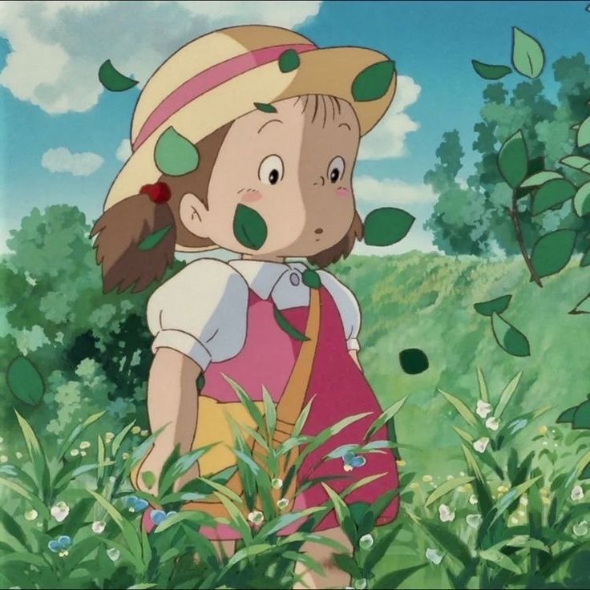
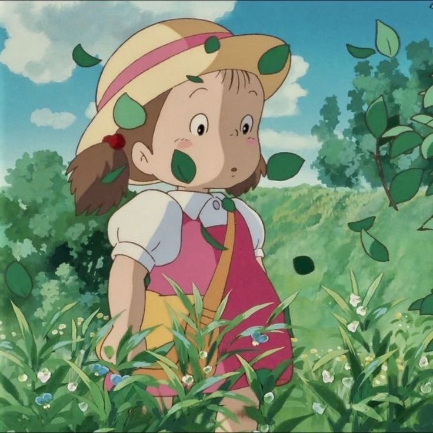

My Neighbor Totoro (となりのトトロ, Tonari no Totoro) is a 1988 Japanese animated fantasy film written and directed by Hayao Miyazaki and animated by Studio Ghibli.
The film focuses on two young sisters and their interactions with friendly wood spirits in postwar rural Japan. It stars the voices of Noriko Hidaka, Chika Sakamoto, and Hitoshi Takagi.
The film explores themes such as animism, Shinto symbolism, environmentalism, and the joys of rural life. Totoro later became a cultural icon and the official mascot of Studio Ghibli.